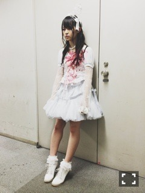
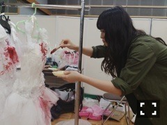
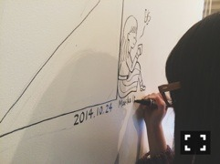

| 2014/10 27 Mon | 奥行きエレクトリッ ク。610回目 |
T-SPOOK TOKYO
HALLOWEEN PARTY
参加致しました！
アーミーガールみたいな感じ。
なかなかの私服感だ、
ミリタリーだあ。
本格的なアーミーガール
とかしてみたい。
結果
パレード歩くなんて
なかなかできないから
嬉しかった！恥ずかしかった！

ライブ衣装はこちら。
VAMPSの時の衣装と同じ！
ライブ終わりなので乱れておられる。
着てみたかったやつ！
素敵！

血糊足してやったわ
今回のステージは
大トリで乃木坂46が歌わせて
いただきました。
ありがとうございました！
暗くなった外でのライブは最高だー
良い夜だったー
楽しかったなあ
10月は賑やかだー
......
こないだKITTEにある
何度目の青空かcafeに
おじゃましました。
かなりん、かりんちゃんと！

ふぉとばい かりん
迷った結果
まいちゅんプロデュース？の
ベジタブルジュースを飲み、
チーズケーキを食べました。
どちらも美味しかった、
おしゃれな味でした！
店内は何空のオフショットが
たくさん飾ってあって
MVも流れてる。
すごく落ち着いていて、
メニューも充実していて、
また行きたいって思いました。
まいちゅんがんばれ〜！

そしてなんと
カフェの壁に絵を描きました。
私がやって良いのか...
という気持ちでしたが、
ぜひ！と言ってくださったので
思い切って描かせていただきました。
どこに描いてあるかは、
何空カフェで確かめてね〜♪
あ、オフショットパネルにも
ちゃっかりサインしたので、
それも見てね。
それから告知！
明日発売の装苑に載ります。
椎名林檎さん表紙の
装苑に出られるなんて
幸せ過ぎて吐きそうだよー
11月1日放送の
乃木坂46SHOW!は
初めてコントに挑戦しました。
今回もアンダー曲も
fullでやるのでぜひ見てね。
早稲田祭参加します〜
まりか
コメント(530)
2014/10/27 12:12